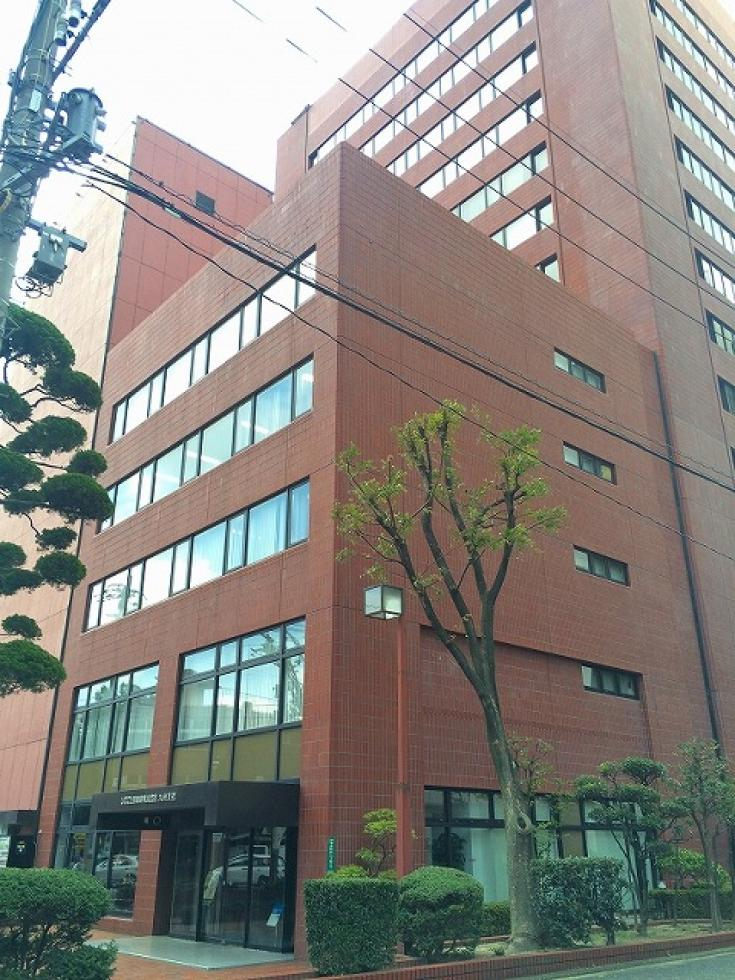

ビバの福岡ライフ!!!
福岡市（ふくおかし）は、福岡県の西部に位置し、近畿地方以西の西日本では2番目、東京23区を除いた全国の市では横浜市、大阪市、名古屋市、札幌市に次ぐ5番目の人口（約159万人）を擁する市。福岡県の県庁所在地であり、政令指定都市である。
博多駅は、福岡県福岡市博多区博多駅中央街にある、九州旅客鉄道・西日本旅客鉄道・福岡市交通局の駅である。
福岡市では博多区は一番有名なところと思っています。
東公園は、自然に近い状態の緑が溢れる「森林公園」。よく手入れの行き届いた遊歩道は、管理の方々の努力の賜物です。 遊歩道をゆったりと歩けば、四季折々の美しい自然を身近に楽しむことができます。この日はとても寒い冬日でしたが、梅の花が1輪咲き、一足早い春を届けてくれていましたよ。ここに来ればその季節ならではの自然と触れ合えます。
こちらには、泉があるんで、穏やかに綺麗な音色が聞こえます。